Ministry of Tourism Lebanon
DISCOVER LEBANON
The Lebanese Mountain range runs the full length of the country like a spine, its western slopes dropping steeply to the Mediterranean and its eastern face descending into the broad Beqaa Valley. The mountains are cut by deep river gorges, the Qadisha, the Nahr Ibrahim, the Assi, that create natural corridors of extraordinary drama, perfect for canyoning, hiking, and white-water kayaking.
At the upper elevations, winter brings heavy snowfall that buries the peaks from November through April, creating ski conditions that routinely surprise first-time visitors expecting a purely desert-adjacent Middle Eastern country. The same peaks that hold snow in February are alive with wildflowers in May, and by July the mountain trails offer cool relief from the coastal heat far below.
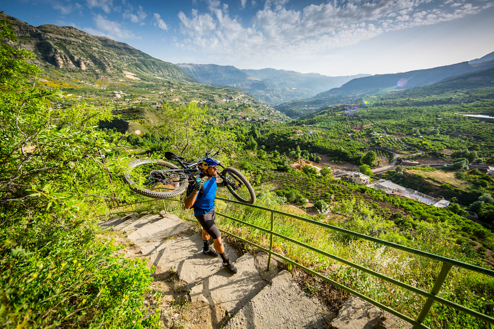
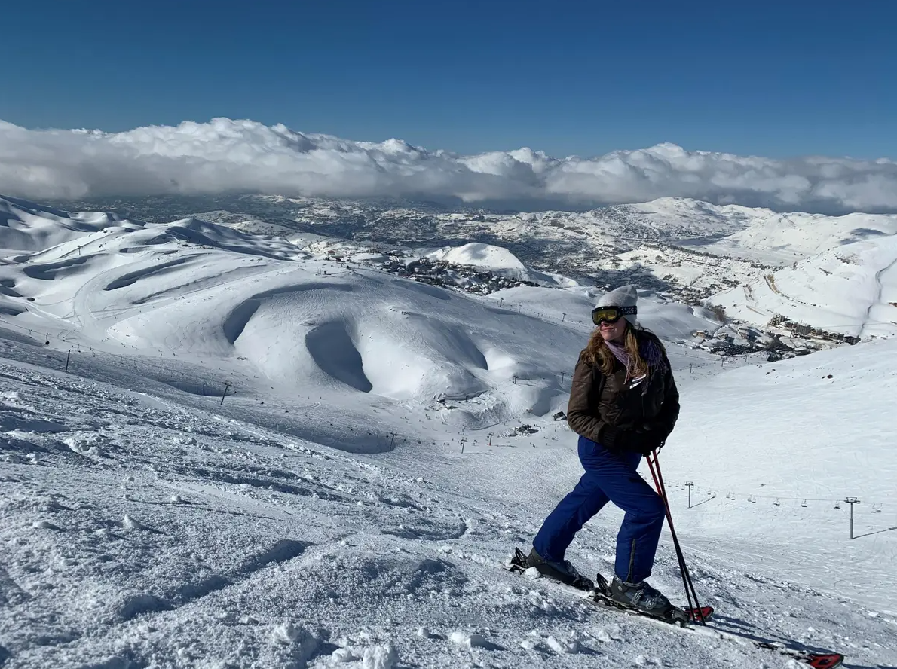
Lebanon's largest and most popular ski resort, spread across four interconnected peaks at elevations between 1,850 and 2,465 meters. Mzaar offers over 80 km of marked ski runs for all levels, from gentle beginner slopes to challenging off-piste terrain, alongside snowboarding parks, sledding runs, and a lively après-ski scene. In summer, the same mountain transforms into a destination for mountain biking, hiking, and paragliding with some of the finest views in Lebanon.
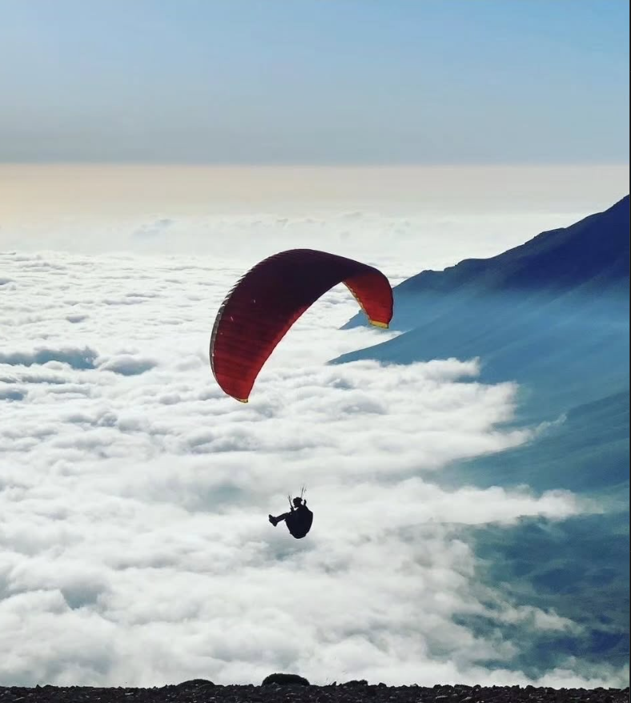
One of Lebanon's most dramatic natural landscapes, a UNESCO-listed limestone gorge whose sheer walls rise over 1,000 meters above the valley floor. The valley offers multi-day hiking routes through ancient monasteries, rock-cut hermitages, and dense cedar forests, as well as technical canyoning in the upper gorge sections where the river narrows between vertical cliffs. The combination of natural drama, historical depth, and raw wilderness makes it Lebanon's finest adventure hiking destination.
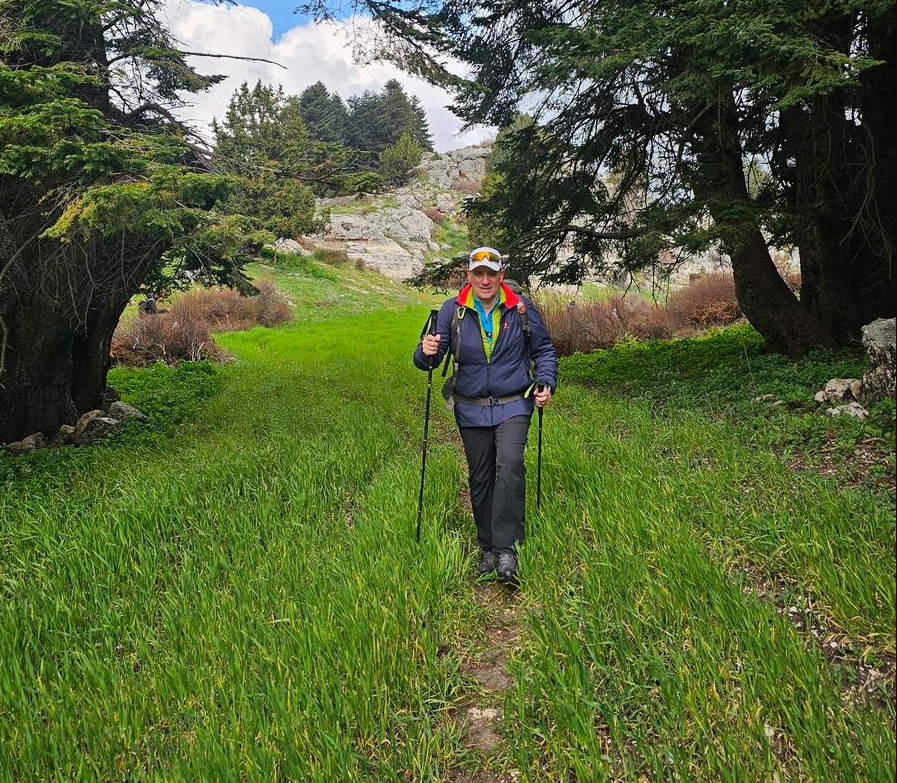
Lebanon's most remote and least-visited adventure territory, a rugged highland region of dense forests, rushing rivers, seasonal waterfalls, and ancient castle ruins. Akkar receives more rainfall than any other part of Lebanon and its rivers run fierce and full in spring, making it excellent territory for canyoning and river trekking. The region's near-total absence of tourist infrastructure is its greatest feature, a rawness and wildness that is increasingly rare in Lebanon.
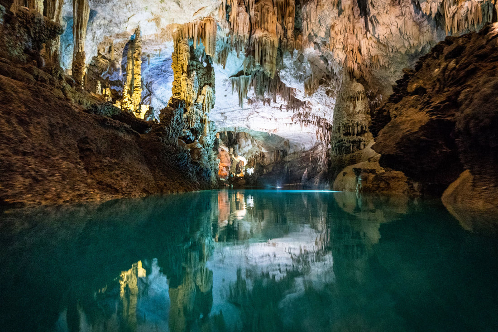
The Jeita Grotto is Lebanon's most spectacular natural underground environment, a system of interconnected limestone caverns stretching over 9 kilometers, carved by a subterranean river over millions of years. The upper gallery is explored on foot through a world of colossal stalactites and stalagmites, while the lower gallery is toured by boat along an underground river. It was a finalist for the New Seven Wonders of Nature and remains one of the most visited natural attractions in the entire Middle East.
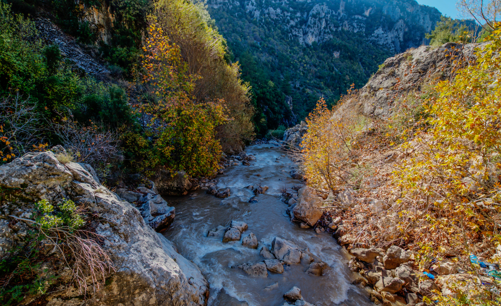
The ancient Adonis River, Nahr Ibrahim, flows from its sacred source at Afqa, where it emerges dramatically from a cave at the base of a towering cliff, down through a deep limestone canyon to the sea near Byblos. The canyon trail is one of Lebanon's finest adventure hikes, a full-day route through cascading waterfalls, ancient ruined temples, and river crossings, passing through some of the most mythologically resonant landscape in the country.
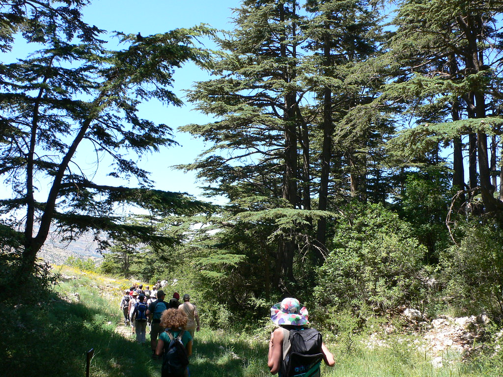
A smaller and less-visited alternative to the Cedars of God, the Tannourine Cedar Reserve shelters a remarkable forest of ancient cedars alongside a network of hiking trails, mountain bike routes, and a natural bridge formation, the Balaa Gorge, where three sinkholes drop through the limestone plateau into a rushing underground river far below. The Balaa sinkholes are one of Lebanon's most dramatic and unusual natural phenomena and a growing destination for technical canyoning.
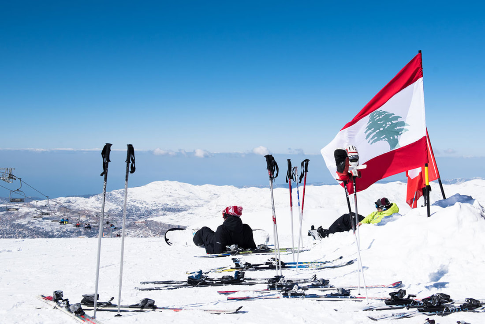
Lebanon has six ski resorts, Mzaar, The Cedars, Laqlouq, Zaarour, Faqra, and Qanat Bakiche, operating at elevations between 1,500 and 2,800 meters. Mzaar is the largest and most developed, with modern lifts, groomed pistes, and rental facilities. The Cedars resort, in the north near Bsharri, is the oldest in the Middle East and sits beside one of the country's most sacred cedar groves. The combination of reliable winter snowfall, dramatic mountain scenery, and the astonishing fact that the sea is visible from many slopes makes Lebanese skiing one of the most memorable in the world.
The Lebanon Mountain Trail, 440 kilometers of marked trail running the full length of the country from Andqet in the north to Marjayoun in the south, is Lebanon's flagship adventure tourism product. The trail passes through over 75 villages, ancient cedar forests, river gorges, and mountain meadows across 27 sections that can each be completed in a day. Shorter day hikes are available throughout the country, from the Qadisha Valley floor trail to the summit walks above Faraya and the forest paths of the Chouf Reserve.
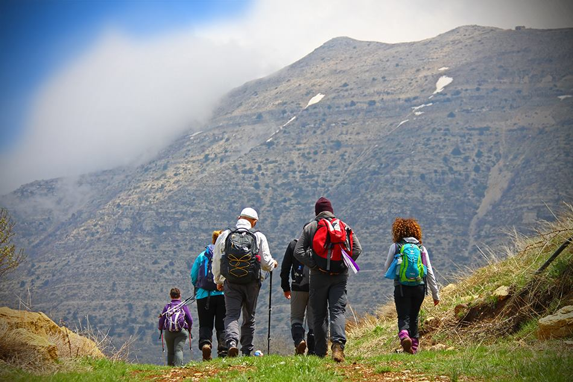
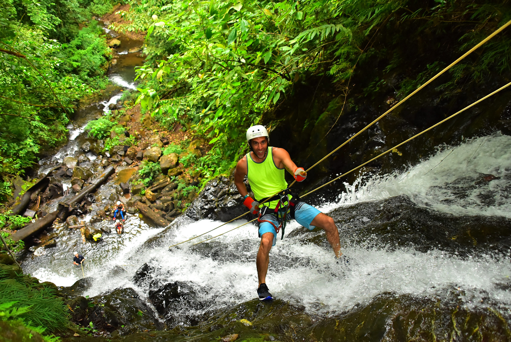
Lebanon's limestone mountains are cut by dozens of deep river gorges that are perfectly suited to canyoning, descending river canyons by a combination of hiking, swimming, jumping, and rappelling through waterfalls. The gorges of Akkar, the Nahr Ibrahim canyon, the Balaa sinkholes at Tannourine, and the upper sections of the Qadisha are among the finest canyoning environments in the entire eastern Mediterranean. Spring and early summer, when snowmelt fills the rivers, are the most spectacular seasons.
Lebanon has a growing rock climbing community and a number of excellent established climbing areas, particularly in the limestone cliffs of the Qadisha Valley, the crags above Faraya, and the sea cliffs of Raouché in Beirut. The Douma climbing area in North Lebanon offers multi-pitch routes on spectacular white limestone above a traditional village, and is one of the finest and least-known sport climbing destinations in the Middle East. Most routes are well-bolted and suited to intermediate to advanced climbers.
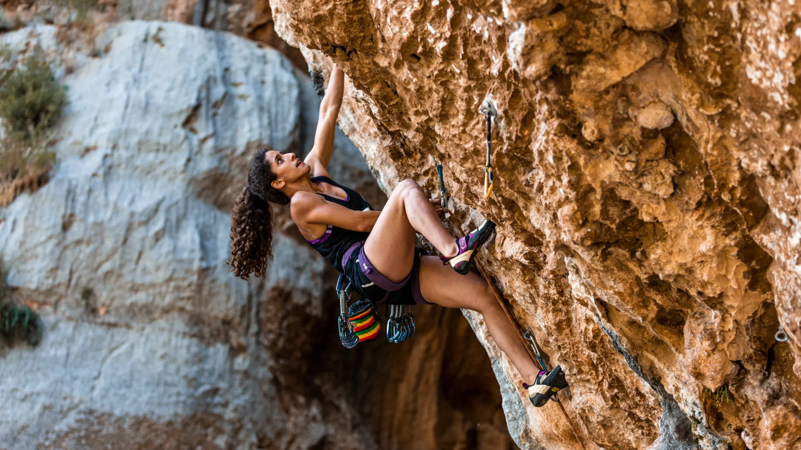
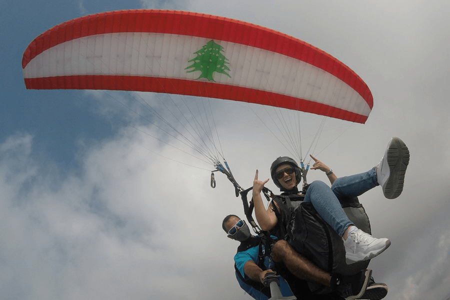
Lebanon's combination of steep mountains, reliable thermal conditions, and spectacular coastal views makes it an exceptional paragliding destination. The most popular launch sites are above Jounieh in Keserwan, where tandem flights take off from the mountain ridge and glide down to the sea with the entire bay spread below, and the highlands above Zahle in the Beqaa. On a clear day, a paragliding flight over the Lebanese coast is one of the most visually overwhelming experiences the country offers.
Lebanon's Mediterranean coastline offers good conditions for sea kayaking, diving, and snorkeling, particularly around the Palm Islands marine reserve near Tripoli and the underwater ruins at Tyre, where Roman columns, ancient anchors, and amphora lie scattered on the seabed in clear shallow water. Sea kayaking routes along the northern coast offer a perspective on Lebanon's dramatic limestone sea cliffs that is impossible to appreciate from the shore. Several operators in Jounieh and Batroun offer guided kayaking, diving, and snorkeling trips throughout the summer season.
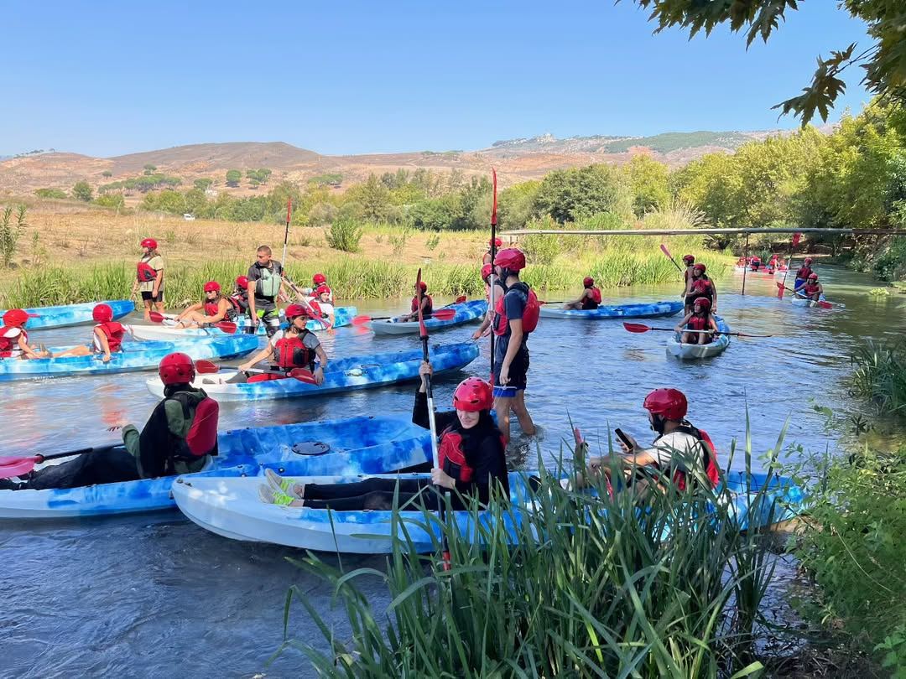
Some of Lebanon's finest adventure experiences are not organized activities — they are simply the experience of being in an extraordinary landscape, alert, curious, and moving through it under your own power.
The Lebanon Mountain Trail, completed in 2011, changed the way many Lebanese and international visitors understand their country. Beyond the trail, Lebanon's nature rewards those willing to leave marked paths. The upper Akkar wilderness, forests of cedar, oak, and fir, remain largely untouched and can be explored with a local guide in near-total solitude.
Qornet el Sawda Summit
Lebanon's highest peak at 3,088 meters, reachable on foot from the Cedars ski area. On clear days, views stretch from Cyprus to the Syrian desert — one of the Levant's most extraordinary panoramas.
Wildflower Season, March to May
Mountain meadows explode with color as snowmelt feeds the soil. Over 2,600 plant species, including dozens of endemic orchids, bloom during this period.
Raptor Migration, Spring & Autumn
Lebanon sits on a major bird migration route. Mountain ridges above Batroun and the Beqaa Valley corridor are prime locations to witness honey buzzards, steppe eagles, and thousands of other raptors passing.
Sea Cave Exploration, Summer
The limestone cliffs north of Batroun and around Raouché conceal accessible sea caves, explored by kayak or swimming on calm summer days — a hidden side of Lebanon's coastline.
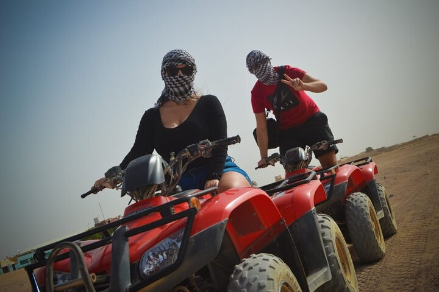
Adventure tourism naturally draws visitors to the parts of Lebanon that conventional tourism ignores, the remote highlands of Akkar, the wild gorges of the north, the mountain villages of the interior. These communities rarely benefit from the tourism spending concentrated in Beirut and the coastal strip, and adventure tourism is one of the most effective mechanisms for distributing that benefit more equitably across the country.
Adventure tourism is highly dependent on local knowledge and local people, guides, drivers, accommodation hosts, equipment suppliers, and rescue services. Every adventure tourism business that operates responsibly creates jobs that are rooted in specific communities, require deep local knowledge, and cannot easily be outsourced or replaced. In rural areas with limited economic opportunities, these jobs can be transformative.
Unlike beach tourism which is concentrated in summer, adventure tourism in Lebanon is genuinely year-round, skiing in winter, canyoning in spring, hiking and paragliding in summer and autumn. This seasonal spread reduces the feast-or-famine pattern that characterizes much of Lebanon's current tourism economy and builds a more stable, year-round revenue base for the communities that host it.
Adventure tourism only works if the natural environments it depends on are protected and well-maintained. A canyoning operator whose business depends on a pristine river gorge has a direct economic stake in keeping that gorge clean and free from development. This creates a powerful alignment between adventure tourism and conservation, making wild places economically valuable in their natural state.
Adventure tourism is one of the most effective ways of changing the international perception of Lebanon. Every image of a paraglider above the Jounieh bay, a skier on a snow-covered peak with the sea visible below, or a hiker in the Qadisha Valley reaches an international audience that may only associate Lebanon with conflict. These images tell a different and equally true story, one of extraordinary beauty, physical possibility, and a country worth coming to discover.
For Lebanese people themselves, adventure tourism is a source of genuine national pride, a reminder that the geography they inhabit is objectively extraordinary by any global standard. The Lebanon Mountain Trail in particular has had a remarkable effect on Lebanese self-perception, introducing generations of urban Lebanese to a countryside they had never properly explored and giving them a new relationship with the land they call home.
©2026 All Rights Reserved - Ministry of Tourism Lebanon